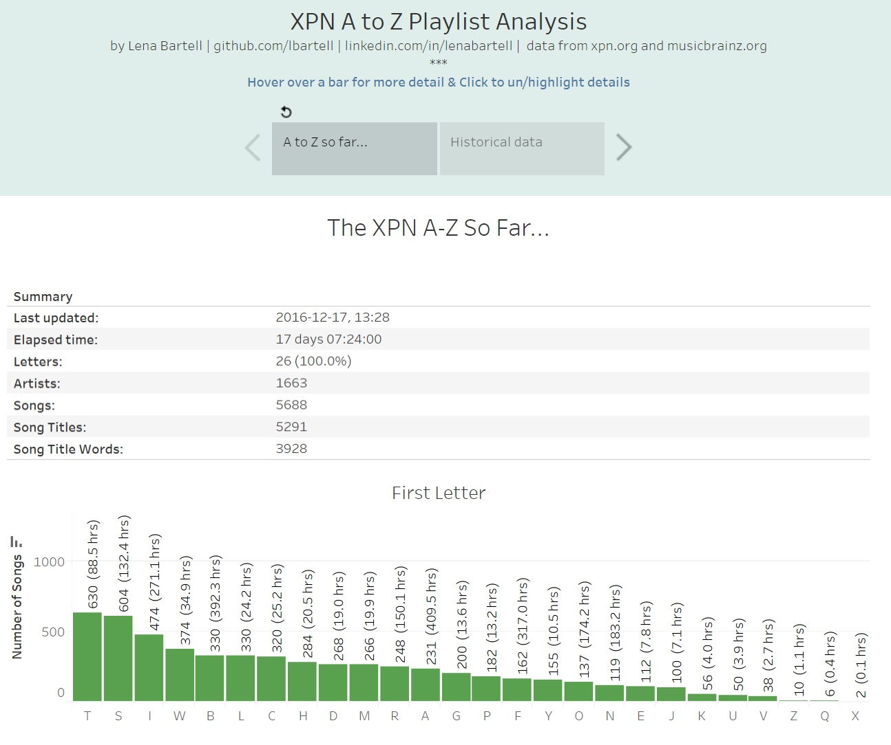

WXPN radio A to Z marathon | playlist analysis
In a massive marathon event, WXPN radio in Philadelphia played over 5,000 songs from their library in alphabetical order. The marathon started on November 30 and continued 24/7 until mid-day on December 17, 2016. To learn more, check out their website: xpn.org (on twitter @wxpnfm, #XPNAtoZ).
During the marathon, I developed code to download and analyze the playlist and managed an online visualization of the data using Tableau.
In the news:
- "Meet Lena Bartell, #XPNAtoZ data nerd and massive music fan", by Bruce Warren. December 16, 2016.
- "Tuning in to the WXPN A to Z marathon, alphabetically", by Dan DeLuca. December 16, 2016.
- "BEHOLD, DATA NERDS, THIS INSANE BREAKDOWN OF WXPN'S #XPNATOZ COUNTDOWN", on philebrity.com. December 16, 2016.